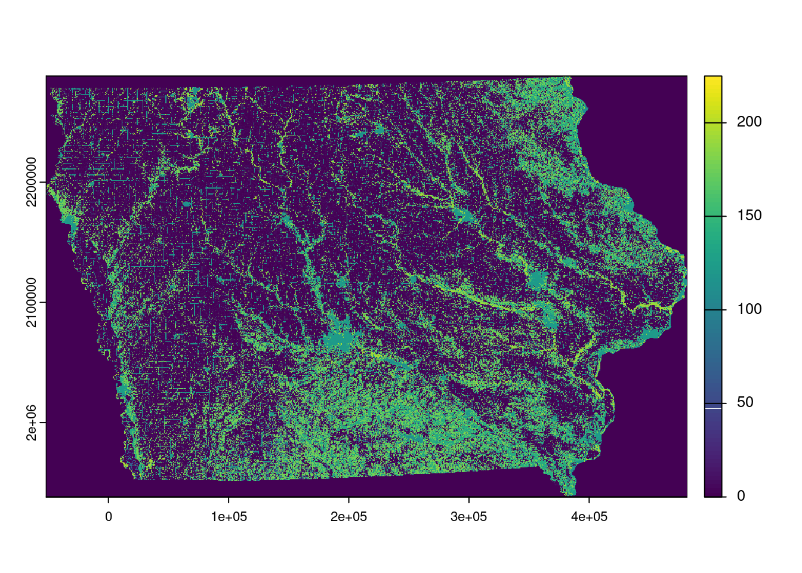

if (!require("pacman")) install.packages("pacman")Loading required package: pacmanpacman::p_load(terra, raster, mapview, dplyr, sf, lubridate, downloader)Handling raster data with terra
This is my practice sections following R as GIS for Economists.
if (!require("pacman")) install.packages("pacman")Loading required package: pacmanpacman::p_load(terra, raster, mapview, dplyr, sf, lubridate, downloader)(
IA_cdl_2015 <- raster::raster("Data/IA_cdl_2015.tif")
)class : RasterLayer
dimensions : 11671, 17795, 207685445 (nrow, ncol, ncell)
resolution : 30, 30 (x, y)
extent : -52095, 481755, 1938165, 2288295 (xmin, xmax, ymin, ymax)
crs : +proj=aea +lat_0=23 +lon_0=-96 +lat_1=29.5 +lat_2=45.5 +x_0=0 +y_0=0 +ellps=GRS80 +towgs84=0,0,0,0,0,0,0 +units=m +no_defs
source : IA_cdl_2015.tif
names : Layer_1
values : 0, 229 (min, max)IA_cdl_2016 <- raster::raster("Data/IA_CDL_2016.tif")
#--- stack the two ---#
(
IA_cdl_stack <- raster::stack(IA_cdl_2015, IA_cdl_2016)
)class : RasterStack
dimensions : 11671, 17795, 207685445, 2 (nrow, ncol, ncell, nlayers)
resolution : 30, 30 (x, y)
extent : -52095, 481755, 1938165, 2288295 (xmin, xmax, ymin, ymax)
crs : +proj=aea +lat_0=23 +lon_0=-96 +lat_1=29.5 +lat_2=45.5 +x_0=0 +y_0=0 +ellps=GRS80 +towgs84=0,0,0,0,0,0,0 +units=m +no_defs
names : Layer_1, IA_CDL_2016
min values : 0, 0
max values : 229, 241 # I am not evaluating this cell because it takes quite some time to execute.
#--- stack the two ---#
IA_cdl_brick <- brick(IA_cdl_stack)
#--- or this works as well ---#
# IA_cdl_brick <- brick(IA_cdl_2015, IA_cdl_2016)
#--- take a look ---#
IA_cdl_brick#--- convert to a SpatRaster ---#
IA_cdl_2015_sr <- terra::rast(IA_cdl_2015)
#--- convert to a SpatRaster ---#
IA_cdl_stack_sr <- terra::rast(IA_cdl_stack)Warning: [rast] CRS do not match#--- take a look ---#
IA_cdl_2015_srclass : SpatRaster
dimensions : 11671, 17795, 1 (nrow, ncol, nlyr)
resolution : 30, 30 (x, y)
extent : -52095, 481755, 1938165, 2288295 (xmin, xmax, ymin, ymax)
coord. ref. : +proj=aea +lat_0=23 +lon_0=-96 +lat_1=29.5 +lat_2=45.5 +x_0=0 +y_0=0 +ellps=GRS80 +towgs84=0,0,0,0,0,0,0 +units=m +no_defs
source : IA_cdl_2015.tif
name : Layer_1
min value : 0
max value : 229 # create a single-layer from multiple single-layer
IA_cdl_2016_sr <- terra::rast(IA_cdl_2016)
# concatenate
(
IA_cdl_ml_sr <- c(IA_cdl_2015_sr, IA_cdl_2016_sr)
)Warning: [rast] CRS do not matchclass : SpatRaster
dimensions : 11671, 17795, 2 (nrow, ncol, nlyr)
resolution : 30, 30 (x, y)
extent : -52095, 481755, 1938165, 2288295 (xmin, xmax, ymin, ymax)
coord. ref. : +proj=aea +lat_0=23 +lon_0=-96 +lat_1=29.5 +lat_2=45.5 +x_0=0 +y_0=0 +ellps=GRS80 +towgs84=0,0,0,0,0,0,0 +units=m +no_defs
sources : IA_cdl_2015.tif
IA_CDL_2016.tif
color table : 2
names : Layer_1, IA_CDL_2016
min values : 0, 0
max values : 229, 241 IA_cdl_stack_sr %>% raster::raster()class : RasterLayer
dimensions : 11671, 17795, 207685445 (nrow, ncol, ncell)
resolution : 30, 30 (x, y)
extent : -52095, 481755, 1938165, 2288295 (xmin, xmax, ymin, ymax)
crs : +proj=aea +lat_0=23 +lon_0=-96 +lat_1=29.5 +lat_2=45.5 +x_0=0 +y_0=0 +ellps=GRS80 +towgs84=0,0,0,0,0,0,0 +units=m +no_defs
source : IA_cdl_2015.tif
names : Layer_1
values : 0, 229 (min, max)# %>% raster::stack()
# %>% raster::brick() #--- Illinois county boundary ---#
(
IL_county <-
tigris::counties(
state = "Illinois",
progress_bar = FALSE
) %>%
dplyr::select(STATEFP, COUNTYFP)
)Retrieving data for the year 2022Simple feature collection with 102 features and 2 fields
Geometry type: MULTIPOLYGON
Dimension: XY
Bounding box: xmin: -91.51308 ymin: 36.9703 xmax: -87.01994 ymax: 42.50848
Geodetic CRS: NAD83
First 10 features:
STATEFP COUNTYFP geometry
86 17 067 MULTIPOLYGON (((-90.90609 4...
92 17 025 MULTIPOLYGON (((-88.69516 3...
131 17 185 MULTIPOLYGON (((-87.89243 3...
148 17 113 MULTIPOLYGON (((-88.91954 4...
158 17 005 MULTIPOLYGON (((-89.37207 3...
159 17 009 MULTIPOLYGON (((-90.53674 3...
213 17 083 MULTIPOLYGON (((-90.1459 39...
254 17 147 MULTIPOLYGON (((-88.46335 4...
266 17 151 MULTIPOLYGON (((-88.48289 3...
303 17 011 MULTIPOLYGON (((-89.16654 4...(
IL_county_sv <- terra::vect(IL_county)
) class : SpatVector
geometry : polygons
dimensions : 102, 2 (geometries, attributes)
extent : -91.51308, -87.01994, 36.9703, 42.50848 (xmin, xmax, ymin, ymax)
coord. ref. : lon/lat NAD83 (EPSG:4269)
names : STATEFP COUNTYFP
type : <chr> <chr>
values : 17 067
17 025
17 185(
IA_cdl_2015_sr <- terra::rast("Data/IA_cdl_2015.tif")
)class : SpatRaster
dimensions : 11671, 17795, 1 (nrow, ncol, nlyr)
resolution : 30, 30 (x, y)
extent : -52095, 481755, 1938165, 2288295 (xmin, xmax, ymin, ymax)
coord. ref. : +proj=aea +lat_0=23 +lon_0=-96 +lat_1=29.5 +lat_2=45.5 +x_0=0 +y_0=0 +ellps=GRS80 +towgs84=0,0,0,0,0,0,0 +units=m +no_defs
source : IA_cdl_2015.tif
name : Layer_1
min value : 0
max value : 229 #--- the list of path to the files ---#
files_list <- c("Data/IA_cdl_2015.tif", "Data/IA_CDL_2016.tif")
#--- read the two at the same time ---#
(
multi_layer_sr <- terra::rast(files_list)
)Warning: [rast] CRS do not matchclass : SpatRaster
dimensions : 11671, 17795, 2 (nrow, ncol, nlyr)
resolution : 30, 30 (x, y)
extent : -52095, 481755, 1938165, 2288295 (xmin, xmax, ymin, ymax)
coord. ref. : +proj=aea +lat_0=23 +lon_0=-96 +lat_1=29.5 +lat_2=45.5 +x_0=0 +y_0=0 +ellps=GRS80 +towgs84=0,0,0,0,0,0,0 +units=m +no_defs
sources : IA_cdl_2015.tif
IA_CDL_2016.tif
color table : 2
names : Layer_1, IA_CDL_2016
min values : 0, 0
max values : 229, 241 terra::crs(IA_cdl_2015_sr)[1] "BOUNDCRS[\n SOURCECRS[\n PROJCRS[\"unnamed\",\n BASEGEOGCRS[\"GRS 1980(IUGG, 1980)\",\n DATUM[\"unknown\",\n ELLIPSOID[\"GRS80\",6378137,298.257222101,\n LENGTHUNIT[\"metre\",1,\n ID[\"EPSG\",9001]]]],\n PRIMEM[\"Greenwich\",0,\n ANGLEUNIT[\"degree\",0.0174532925199433,\n ID[\"EPSG\",9122]]]],\n CONVERSION[\"Albers Equal Area\",\n METHOD[\"Albers Equal Area\",\n ID[\"EPSG\",9822]],\n PARAMETER[\"Latitude of false origin\",23,\n ANGLEUNIT[\"degree\",0.0174532925199433],\n ID[\"EPSG\",8821]],\n PARAMETER[\"Longitude of false origin\",-96,\n ANGLEUNIT[\"degree\",0.0174532925199433],\n ID[\"EPSG\",8822]],\n PARAMETER[\"Latitude of 1st standard parallel\",29.5,\n ANGLEUNIT[\"degree\",0.0174532925199433],\n ID[\"EPSG\",8823]],\n PARAMETER[\"Latitude of 2nd standard parallel\",45.5,\n ANGLEUNIT[\"degree\",0.0174532925199433],\n ID[\"EPSG\",8824]],\n PARAMETER[\"Easting at false origin\",0,\n LENGTHUNIT[\"metre\",1],\n ID[\"EPSG\",8826]],\n PARAMETER[\"Northing at false origin\",0,\n LENGTHUNIT[\"metre\",1],\n ID[\"EPSG\",8827]]],\n CS[Cartesian,2],\n AXIS[\"easting\",east,\n ORDER[1],\n LENGTHUNIT[\"metre\",1,\n ID[\"EPSG\",9001]]],\n AXIS[\"northing\",north,\n ORDER[2],\n LENGTHUNIT[\"metre\",1,\n ID[\"EPSG\",9001]]]]],\n TARGETCRS[\n GEOGCRS[\"WGS 84\",\n DATUM[\"World Geodetic System 1984\",\n ELLIPSOID[\"WGS 84\",6378137,298.257223563,\n LENGTHUNIT[\"metre\",1]]],\n PRIMEM[\"Greenwich\",0,\n ANGLEUNIT[\"degree\",0.0174532925199433]],\n CS[ellipsoidal,2],\n AXIS[\"geodetic latitude (Lat)\",north,\n ORDER[1],\n ANGLEUNIT[\"degree\",0.0174532925199433]],\n AXIS[\"geodetic longitude (Lon)\",east,\n ORDER[2],\n ANGLEUNIT[\"degree\",0.0174532925199433]],\n USAGE[\n SCOPE[\"Horizontal component of 3D system.\"],\n AREA[\"World.\"],\n BBOX[-90,-180,90,180]],\n ID[\"EPSG\",4326]]],\n ABRIDGEDTRANSFORMATION[\"Transformation to WGS84\",\n METHOD[\"Position Vector transformation (geog2D domain)\",\n ID[\"EPSG\",9606]],\n PARAMETER[\"X-axis translation\",0,\n ID[\"EPSG\",8605]],\n PARAMETER[\"Y-axis translation\",0,\n ID[\"EPSG\",8606]],\n PARAMETER[\"Z-axis translation\",0,\n ID[\"EPSG\",8607]],\n PARAMETER[\"X-axis rotation\",0,\n ID[\"EPSG\",8608]],\n PARAMETER[\"Y-axis rotation\",0,\n ID[\"EPSG\",8609]],\n PARAMETER[\"Z-axis rotation\",0,\n ID[\"EPSG\",8610]],\n PARAMETER[\"Scale difference\",1,\n ID[\"EPSG\",8611]]]]"# index
IA_cdl_stack_sr[[2]]class : SpatRaster
dimensions : 11671, 17795, 1 (nrow, ncol, nlyr)
resolution : 30, 30 (x, y)
extent : -52095, 481755, 1938165, 2288295 (xmin, xmax, ymin, ymax)
coord. ref. : +proj=aea +lat_0=23 +lon_0=-96 +lat_1=29.5 +lat_2=45.5 +x_0=0 +y_0=0 +ellps=GRS80 +towgs84=0,0,0,0,0,0,0 +units=m +no_defs
source : IA_CDL_2016.tif
color table : 1
name : IA_CDL_2016
min value : 0
max value : 241 values_from_rs <- terra::values(IA_cdl_stack_sr)
head(values_from_rs) Layer_1 IA_CDL_2016
[1,] 0 0
[2,] 0 0
[3,] 0 0
[4,] 0 0
[5,] 0 0
[6,] 0 0plot(IA_cdl_2015_sr)